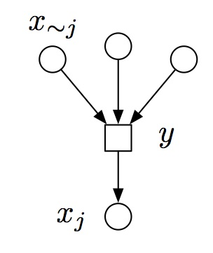
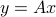
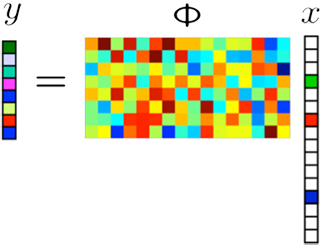
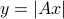

Research
Research is Exciting!
Research Topics
I am now working on using message passing algorithm to solve estimation problems. Applications of message passing algorithm includes compressed sensing, phase retrieval, etc.
Message Passing
|  |
Compressed Sensing
Solve the problem of , where  is a sparse vector.
is a sparse vector.
|  |
Phase Retrieval
Solve the problem of . We only get the magnitude of the observation